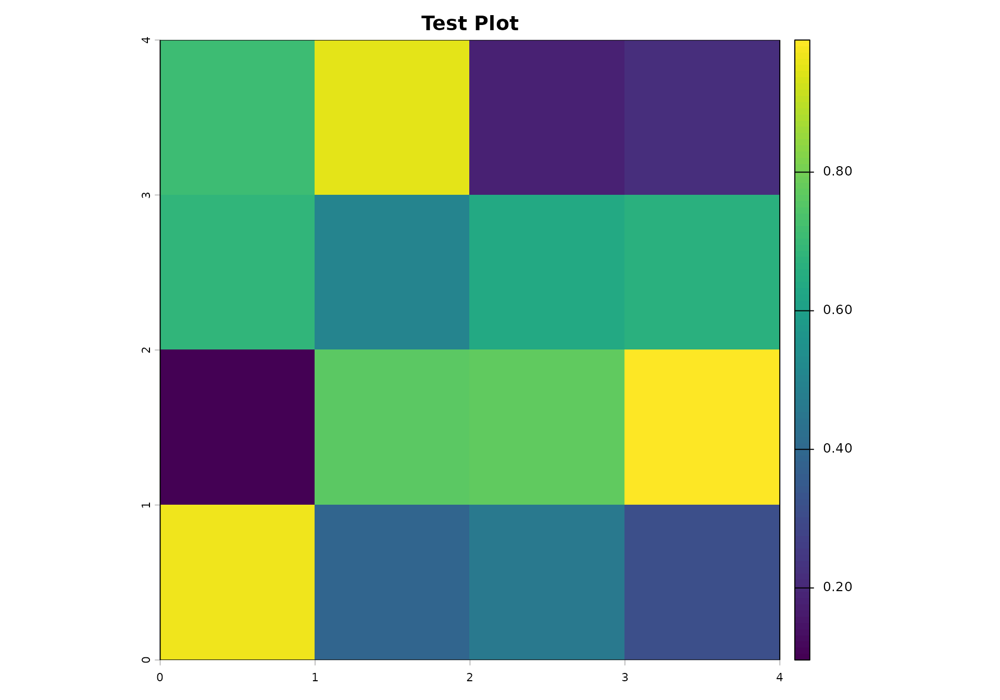

Complete Workflows and Case Studies
geospatialsuite Development Team
Source:vignettes/workflows-case-studies.Rmd
workflows-case-studies.RmdIntroduction
The geospatialsuite package provides comprehensive workflow functions that integrate multiple analysis types into complete, automated pipelines. This vignette demonstrates how to build and execute advanced workflows for real-world geospatial analysis scenarios.
Learning Objectives
By the end of this vignette, you will be able to:
- Execute complete analysis pipelines with minimal code
- Build custom workflows for specific applications
- Integrate multiple data sources automatically
- Handle complex multi-step analysis scenarios
- Optimize workflows for performance and reliability
- Generate comprehensive reports and outputs
Prerequisites
# Load required packages
library(geospatialsuite)
library(terra)
library(sf)
# Verify package functionality
test_geospatialsuite_package_simple(verbose = TRUE)
#> $test_results
#> $test_results$basic_ndvi_test
#> [1] TRUE
#>
#> $test_results$water_index_test
#> [1] TRUE
#>
#> $test_results$basic_visualization_test
#> [1] TRUE
#>
#> $test_results$multiple_indices_simple_test
#> [1] TRUE
#>
#> $test_results$enhanced_ndvi_simple_test
#> [1] TRUE
#>
#> $test_results$dependencies_test
#> [1] TRUE
#>
#> $test_results$spatial_operations_test
#> [1] TRUE
#>
#> $test_results$data_loading_test
#> [1] TRUE
#>
#>
#> $summary
#> $summary$total_tests
#> [1] 8
#>
#> $summary$passed_tests
#> [1] 8
#>
#> $summary$failed_tests
#> [1] 0
#>
#> $summary$success_rate
#> [1] 100
#>
#> $summary$duration_seconds
#> [1] 0.29
#>
#> $summary$version
#> [1] "0.1.0"
#>
#>
#> $test_output_dir
#> [1] "/tmp/RtmpMj0JDG"
#>
#> $timestamp
#> [1] "2026-01-06 11:03:37 EST"
#>
#> $test_approach
#> [1] "simplified_robust"
#>
#> $core_message
#> [1] "Focused on essential functionality with minimal complexity"Comprehensive Workflow Architecture
The package includes pre-built workflows for common analysis scenarios:
- NDVI Crop Analysis: Enhanced vegetation monitoring with quality control
- Vegetation Comprehensive: Multi-index vegetation assessment
- Water Quality Analysis: Complete water parameter assessment
- Terrain Analysis: Topographic characterization workflows
- Temporal Analysis: Time series change detection
- Interactive Mapping: Multi-layer interactive visualization
- Multi-Dataset Integration: Combining diverse spatial datasets
NDVI Crop Analysis Workflow
Basic Enhanced NDVI Workflow
# Create sample multi-temporal data
red_raster <- rast(nrows = 80, ncols = 80,
xmin = -83.5, xmax = -83.0,
ymin = 40.2, ymax = 40.7)
values(red_raster) <- runif(6400, 0.1, 0.3)
nir_raster <- rast(nrows = 80, ncols = 80,
xmin = -83.5, xmax = -83.0,
ymin = 40.2, ymax = 40.7)
values(nir_raster) <- runif(6400, 0.4, 0.8)
# Configure comprehensive NDVI analysis
ndvi_config <- list(
analysis_type = "ndvi_crop_analysis",
input_data = list(red = red_raster, nir = nir_raster),
region_boundary = c(-83.5, 40.2, -83.0, 40.7), # Bounding box
indices = c("NDVI", "EVI2", "SAVI"),
quality_filter = TRUE,
temporal_smoothing = FALSE,
visualization_config = list(
create_maps = TRUE,
ndvi_classes = "none",
interactive = FALSE
)
)
# Execute comprehensive workflow
ndvi_workflow_results <- run_comprehensive_geospatial_workflow(ndvi_config)
# Access results
ndvi_data <- ndvi_workflow_results$results$vegetation_data
ndvi_stats <- ndvi_workflow_results$results$statistics
ndvi_maps <- ndvi_workflow_results$results$visualizationsEnhanced NDVI with Crop Masking
# Simulate CDL crop data
cdl_raster <- rast(nrows = 80, ncols = 80,
xmin = -83.5, xmax = -83.0,
ymin = 40.2, ymax = 40.7)
values(cdl_raster) <- sample(c(1, 5, 24, 36, 61), 6400, replace = TRUE) # Corn, soybeans, wheat, alfalfa, fallow
# Enhanced configuration with crop masking
enhanced_ndvi_config <- list(
analysis_type = "ndvi_crop_analysis",
input_data = list(red = red_raster, nir = nir_raster),
region_boundary = "custom",
cdl_data = cdl_raster,
crop_codes = c(1, 5), # Corn and soybeans only
indices = c("NDVI", "SAVI", "DVI"),
quality_filter = TRUE,
visualization_config = list(
create_maps = TRUE,
interactive = FALSE
)
)
# Run enhanced workflow
enhanced_results <- run_comprehensive_geospatial_workflow(enhanced_ndvi_config)
# Compare masked vs unmasked results
print("Original NDVI stats:")
print(global(ndvi_data, "mean", na.rm = TRUE))
print("Crop-masked NDVI stats:")
print(global(enhanced_results$results$vegetation_data, "mean", na.rm = TRUE))Comprehensive Vegetation Analysis Workflow
Multi-Index Vegetation Assessment
# Create multi-band spectral data
spectral_stack <- c(
red_raster, # Band 1: Red
red_raster * 1.2, # Band 2: Green (simulated)
red_raster * 0.8, # Band 3: Blue (simulated)
nir_raster # Band 4: NIR
)
names(spectral_stack) <- c("red", "green", "blue", "nir")
# Configure comprehensive vegetation analysis
vegetation_config <- list(
analysis_type = "vegetation_comprehensive",
input_data = spectral_stack,
indices = c("NDVI", "EVI2", "SAVI", "GNDVI", "DVI", "RVI"),
crop_type = "general",
analysis_type_detail = "comprehensive",
region_boundary = c(-83.5, 40.2, -83.0, 40.7),
visualization_config = list(
create_maps = TRUE,
comparison_plots = TRUE
)
)
# Execute comprehensive vegetation workflow
vegetation_results <- run_comprehensive_geospatial_workflow(vegetation_config)
# Access detailed results
vegetation_indices <- vegetation_results$results$vegetation_analysis$vegetation_indices
analysis_details <- vegetation_results$results$vegetation_analysis$analysis_results
metadata <- vegetation_results$results$vegetation_analysis$metadata
print("Vegetation indices calculated:")
print(names(vegetation_indices))
print("Analysis metadata:")
print(metadata$indices_used)Crop-Specific Analysis Workflow
# Corn-specific analysis workflow
corn_config <- list(
analysis_type = "vegetation_comprehensive",
input_data = spectral_stack,
crop_type = "corn",
analysis_type_detail = "comprehensive",
cdl_mask = cdl_raster == 1, # Corn mask
indices = c("NDVI", "EVI2", "GNDVI"), # Corn-appropriate indices
visualization_config = list(create_maps = TRUE)
)
corn_results <- run_comprehensive_geospatial_workflow(corn_config)
# Extract corn-specific insights
if ("stress_analysis" %in% names(corn_results$results$vegetation_analysis$analysis_results)) {
stress_results <- corn_results$results$vegetation_analysis$analysis_results$stress_analysis
print("Corn stress analysis:")
print(stress_results)
}Case Study 2: Environmental Monitoring and Water Quality Assessment
Objective: Monitor environmental conditions around water bodies, assess agricultural impacts on water quality, and identify priority areas for conservation.
Step 1: Environmental Monitoring Setup
# Create environmental monitoring scenario
monitoring_extent <- c(-82.8, 39.5, -81.8, 40.5)
# Water quality monitoring stations
water_stations <- data.frame(
station_id = paste0("WQ_", sprintf("%03d", 1:18)),
lon = runif(18, monitoring_extent[1] + 0.1, monitoring_extent[3] - 0.1),
lat = runif(18, monitoring_extent[2] + 0.1, monitoring_extent[4] - 0.1),
nitrate_mg_l = runif(18, 0.5, 15.0),
phosphorus_mg_l = runif(18, 0.02, 2.5),
turbidity_ntu = runif(18, 1, 45),
dissolved_oxygen_mg_l = runif(18, 4, 12),
ph = runif(18, 6.8, 8.4),
sampling_date = sample(seq(as.Date("2024-05-01"), as.Date("2024-09-30"), by = "day"), 18),
watershed = sample(c("Upper_Creek", "Lower_Creek", "Tributary_A"), 18, replace = TRUE)
)
# Land use/land cover data
lulc_raster <- terra::rast(nrows = 150, ncols = 150,
xmin = monitoring_extent[1], xmax = monitoring_extent[3],
ymin = monitoring_extent[2], ymax = monitoring_extent[4])
# Simulate realistic LULC pattern
lulc_codes <- c(1, 5, 41, 42, 81, 82, 11, 21) # Developed, Forest, Wetland, Agriculture
lulc_probs <- c(0.15, 0.25, 0.05, 0.40, 0.08, 0.05, 0.01, 0.01)
terra::values(lulc_raster) <- sample(lulc_codes, 22500, replace = TRUE, prob = lulc_probs)
names(lulc_raster) <- "LULC"
print("Environmental monitoring setup completed")Step 2: Comprehensive Water Quality Analysis
# Comprehensive water quality assessment
water_quality_results <- list()
# Analyze each water quality parameter
parameters <- c("nitrate_mg_l", "phosphorus_mg_l", "turbidity_ntu", "dissolved_oxygen_mg_l")
for (param in parameters) {
# Define parameter-specific thresholds
thresholds <- switch(param,
"nitrate_mg_l" = list("Low" = c(0, 3), "Moderate" = c(3, 6),
"High" = c(6, 10), "Excessive" = c(10, Inf)),
"phosphorus_mg_l" = list("Low" = c(0, 0.1), "Moderate" = c(0.1, 0.3),
"High" = c(0.3, 0.8), "Excessive" = c(0.8, Inf)),
"turbidity_ntu" = list("Clear" = c(0, 5), "Moderate" = c(5, 15),
"Turbid" = c(15, 30), "Very_Turbid" = c(30, Inf)),
"dissolved_oxygen_mg_l" = list("Critical" = c(0, 4), "Stressed" = c(4, 6),
"Good" = c(6, 8), "Excellent" = c(8, Inf))
)
# Comprehensive analysis
water_quality_results[[param]] <- analyze_water_quality_comprehensive(
water_data = water_stations,
variable = param,
region_boundary = monitoring_extent,
thresholds = thresholds,
output_folder = paste0("water_quality_", param)
)
}
print("Water quality analysis completed for all parameters")Step 3: Land Use Impact Assessment
# Assess land use impacts on water quality
land_use_impact_analysis <- function(water_stations, lulc_raster, buffer_sizes = c(500, 1000, 2000)) {
results <- list()
for (buffer_size in buffer_sizes) {
# Extract land use composition around each station
buffered_lulc <- spatial_join_universal(
vector_data = water_stations,
raster_data = lulc_raster,
method = "buffer",
buffer_size = buffer_size,
summary_function = "mode", # Most common land use
variable_names = paste0("dominant_lulc_", buffer_size, "m")
)
# Calculate land use percentages
for (i in 1:nrow(water_stations)) {
station_point <- water_stations[i, ]
station_buffer <- sf::st_buffer(sf::st_as_sf(station_point,
coords = c("lon", "lat"),
crs = 4326),
dist = buffer_size)
# Extract all LULC values within buffer
lulc_values <- terra::extract(lulc_raster, terra::vect(station_buffer))
lulc_table <- table(lulc_values)
# Calculate percentages
total_pixels <- sum(lulc_table)
agriculture_pct <- sum(lulc_table[names(lulc_table) %in% c("1", "5")]) / total_pixels * 100
developed_pct <- sum(lulc_table[names(lulc_table) %in% c("21", "22", "23", "24")]) / total_pixels * 100
water_stations[i, paste0("agriculture_pct_", buffer_size, "m")] <- agriculture_pct
water_stations[i, paste0("developed_pct_", buffer_size, "m")] <- developed_pct
}
results[[paste0("buffer_", buffer_size, "m")]] <- water_stations
}
return(results)
}
# Perform land use impact analysis
land_use_impacts <- land_use_impact_analysis(water_stations, lulc_raster)
# Analyze correlations between land use and water quality
correlation_analysis <- function(data) {
# Select relevant columns
water_quality_vars <- c("nitrate_mg_l", "phosphorus_mg_l", "turbidity_ntu")
land_use_vars <- grep("agriculture_pct|developed_pct", names(data), value = TRUE)
correlation_matrix <- cor(data[, c(water_quality_vars, land_use_vars)],
use = "complete.obs")
return(correlation_matrix)
}
# Analyze correlations for different buffer sizes
correlations_500m <- correlation_analysis(land_use_impacts$buffer_500m)
correlations_1000m <- correlation_analysis(land_use_impacts$buffer_1000m)
correlations_2000m <- correlation_analysis(land_use_impacts$buffer_2000m)
print("Land use impact analysis completed")
print("Correlations at 1000m buffer:")
print(round(correlations_1000m[1:3, 4:7], 3))Step 4: Watershed-Scale Assessment
# Watershed-scale environmental assessment
watershed_assessment <- function(water_stations, environmental_layers) {
# Group stations by watershed
watershed_summary <- list()
for (watershed in unique(water_stations$watershed)) {
watershed_stations <- water_stations[water_stations$watershed == watershed, ]
# Calculate watershed-level statistics
watershed_summary[[watershed]] <- list(
n_stations = nrow(watershed_stations),
mean_nitrate = mean(watershed_stations$nitrate_mg_l, na.rm = TRUE),
mean_phosphorus = mean(watershed_stations$phosphorus_mg_l, na.rm = TRUE),
mean_turbidity = mean(watershed_stations$turbidity_ntu, na.rm = TRUE),
stations_exceeding_nitrate_threshold = sum(watershed_stations$nitrate_mg_l > 6, na.rm = TRUE),
stations_exceeding_phosphorus_threshold = sum(watershed_stations$phosphorus_mg_l > 0.3, na.rm = TRUE)
)
}
return(watershed_summary)
}
# Environmental layers for watershed analysis
environmental_layers <- list(
vegetation = enhanced_ndvi, # From previous case study
elevation = elevation,
lulc = lulc_raster
)
watershed_results <- watershed_assessment(water_stations, environmental_layers)
print("Watershed Assessment Results:")
for (watershed in names(watershed_results)) {
cat("\n", watershed, ":\n")
result <- watershed_results[[watershed]]
cat(" Stations:", result$n_stations, "\n")
cat(" Mean Nitrate:", round(result$mean_nitrate, 2), "mg/L\n")
cat(" Mean Phosphorus:", round(result$mean_phosphorus, 3), "mg/L\n")
cat(" Stations exceeding nitrate threshold:", result$stations_exceeding_nitrate_threshold, "\n")
}Step 5: Conservation Priority Mapping
# Identify priority areas for conservation based on water quality risk
conservation_priority_analysis <- function(lulc_raster, water_quality_data, slope_data = NULL) {
# Create risk factors
risk_factors <- list()
# Agricultural intensity risk
ag_risk <- lulc_raster
ag_risk[lulc_raster != 1 & lulc_raster != 5] <- 0 # Non-ag areas = 0 risk
ag_risk[lulc_raster == 1 | lulc_raster == 5] <- 1 # Ag areas = 1 risk
names(ag_risk) <- "agricultural_risk"
# Water quality risk based on monitoring data
# Create risk surface using interpolation of water quality data
high_risk_stations <- water_quality_data[water_quality_data$nitrate_mg_l > 6 |
water_quality_data$phosphorus_mg_l > 0.3, ]
if (nrow(high_risk_stations) > 0) {
# Simple distance-based risk (closer to high-risk stations = higher risk)
risk_raster <- terra::rast(lulc_raster)
terra::values(risk_raster) <- 0
for (i in 1:nrow(high_risk_stations)) {
station_point <- c(high_risk_stations$lon[i], high_risk_stations$lat[i])
# Create simple distance decay function (this is simplified)
distances <- terra::distance(risk_raster, station_point)
station_risk <- 1 / (1 + distances / 5000) # 5km decay distance
risk_raster <- risk_raster + station_risk
}
names(risk_raster) <- "water_quality_risk"
} else {
risk_raster <- ag_risk * 0 # No high-risk stations
}
# Combined priority score
combined_priority <- (ag_risk * 0.6) + (risk_raster * 0.4)
names(combined_priority) <- "conservation_priority"
# Classify priority levels
priority_values <- terra::values(combined_priority, mat = FALSE)
priority_breaks <- quantile(priority_values[priority_values > 0],
c(0, 0.25, 0.5, 0.75, 1.0), na.rm = TRUE)
priority_classified <- terra::classify(combined_priority,
cbind(priority_breaks[-length(priority_breaks)],
priority_breaks[-1],
1:4))
names(priority_classified) <- "priority_class"
return(list(
priority_surface = combined_priority,
priority_classified = priority_classified,
high_risk_stations = high_risk_stations
))
}
# Generate conservation priorities
conservation_priorities <- conservation_priority_analysis(lulc_raster, water_stations)
print("Conservation priority analysis completed")
print(paste("High-risk stations identified:", nrow(conservation_priorities$high_risk_stations)))Case Study 3: Temporal Change Detection and Monitoring
Objective: Analyze landscape changes over time, detect deforestation/land use conversion, and monitor ecosystem health trends.
Step 1: Multi-Temporal Data Preparation
# Simulate multi-temporal satellite data (5-year time series)
years <- 2020:2024
temporal_extent <- c(-83.0, 40.2, -82.0, 41.2)
# Create temporal NDVI series with realistic trends
temporal_ndvi_series <- list()
base_ndvi <- terra::rast(nrows = 120, ncols = 120,
xmin = temporal_extent[1], xmax = temporal_extent[3],
ymin = temporal_extent[2], ymax = temporal_extent[4])
# Create base NDVI pattern
x_coords <- terra::xFromCell(base_ndvi, 1:terra::ncell(base_ndvi))
y_coords <- terra::yFromCell(base_ndvi, 1:terra::ncell(base_ndvi))
base_pattern <- 0.6 + 0.2 * sin((x_coords - min(x_coords)) * 6) +
0.1 * cos((y_coords - min(y_coords)) * 4) +
rnorm(terra::ncell(base_ndvi), 0, 0.1)
terra::values(base_ndvi) <- pmax(0.1, pmin(0.9, base_pattern))
# Simulate temporal changes
for (i in 1:length(years)) {
year <- years[i]
# Add temporal trends
# 1. General vegetation improvement (climate change effect)
climate_trend <- (i - 1) * 0.02
# 2. Localized disturbances (development, deforestation)
disturbance_effect <- 0
if (i >= 3) { # Disturbance starts in year 3
# Simulate development in lower-left quadrant
disturbance_mask <- (x_coords < (min(x_coords) + (max(x_coords) - min(x_coords)) * 0.4)) &
(y_coords < (min(y_coords) + (max(y_coords) - min(y_coords)) * 0.4))
disturbance_effect <- ifelse(disturbance_mask, -0.3, 0)
}
# 3. Inter-annual variability
annual_variation <- rnorm(terra::ncell(base_ndvi), 0, 0.05)
# Combine effects
year_ndvi <- base_ndvi + climate_trend + disturbance_effect + annual_variation
year_ndvi <- pmax(0.05, pmin(0.95, year_ndvi))
names(year_ndvi) <- paste0("NDVI_", year)
temporal_ndvi_series[[as.character(year)]] <- year_ndvi
}
print("Multi-temporal data series created for years:", paste(years, collapse = ", "))Step 2: Comprehensive Temporal Analysis
# Comprehensive temporal change analysis
temporal_analysis_results <- analyze_temporal_changes(
data_list = temporal_ndvi_series,
dates = as.character(years),
region_boundary = temporal_extent,
analysis_type = "trend",
output_folder = "temporal_analysis_results"
)
# Additional change detection analysis
change_detection_results <- analyze_temporal_changes(
data_list = temporal_ndvi_series,
dates = as.character(years),
analysis_type = "change_detection"
)
# Statistical analysis
statistics_results <- analyze_temporal_changes(
data_list = temporal_ndvi_series,
dates = as.character(years),
analysis_type = "statistics"
)
print("Temporal analysis completed:")
print("Trend analysis:", !is.null(temporal_analysis_results$trend_rasters))
print("Change detection:", length(change_detection_results$change_rasters), "change maps")
print("Statistical summary:", length(statistics_results$statistics_rasters), "statistic layers")Step 3: Change Hotspot Identification
# Identify areas of significant change
identify_change_hotspots <- function(trend_results, change_results, threshold_slope = 0.02) {
# Extract slope (trend) raster
slope_raster <- trend_results$trend_rasters$slope
r_squared_raster <- trend_results$trend_rasters$r_squared
# Identify significant trends
significant_trends <- abs(slope_raster) > threshold_slope & r_squared_raster > 0.5
# Classify change types
change_types <- slope_raster
change_types[slope_raster > threshold_slope & significant_trends] <- 2 # Increasing
change_types[slope_raster < -threshold_slope & significant_trends] <- 1 # Decreasing
change_types[!significant_trends] <- 0 # No significant change
names(change_types) <- "change_type"
# Calculate change statistics
n_total <- terra::ncell(change_types)
n_increasing <- sum(terra::values(change_types) == 2, na.rm = TRUE)
n_decreasing <- sum(terra::values(change_types) == 1, na.rm = TRUE)
n_stable <- sum(terra::values(change_types) == 0, na.rm = TRUE)
change_stats <- list(
total_pixels = n_total,
increasing_pixels = n_increasing,
decreasing_pixels = n_decreasing,
stable_pixels = n_stable,
increasing_percent = round(n_increasing / n_total * 100, 1),
decreasing_percent = round(n_decreasing / n_total * 100, 1)
)
return(list(
change_types = change_types,
significant_trends = significant_trends,
change_statistics = change_stats
))
}
# Identify hotspots
change_hotspots <- identify_change_hotspots(temporal_analysis_results, change_detection_results)
print("Change Hotspot Analysis:")
print(paste("Pixels with increasing vegetation:", change_hotspots$change_statistics$increasing_pixels))
print(paste("Pixels with decreasing vegetation:", change_hotspots$change_statistics$decreasing_pixels))
print(paste("Percentage of area with significant decline:",
change_hotspots$change_statistics$decreasing_percent, "%"))Step 4: Integrated Multi-Case Study Synthesis
# Synthesize results from all case studies
comprehensive_synthesis <- function(agricultural_results, environmental_results, temporal_results) {
synthesis_report <- list()
# 1. Agricultural insights
synthesis_report$agricultural_summary <- list(
total_fields_analyzed = nrow(field_boundaries),
management_zones_created = management_zones$optimal_zones,
average_ndvi = round(mean(terra::values(enhanced_ndvi), na.rm = TRUE), 3),
precision_ag_benefits = "Variable-rate applications recommended for all zones"
)
# 2. Environmental insights
synthesis_report$environmental_summary <- list(
water_stations_monitored = nrow(water_stations),
parameters_analyzed = length(parameters),
watersheds_assessed = length(unique(water_stations$watershed)),
high_risk_areas_identified = nrow(conservation_priorities$high_risk_stations)
)
# 3. Temporal insights
synthesis_report$temporal_summary <- list(
years_analyzed = length(years),
significant_change_areas = change_hotspots$change_statistics$decreasing_percent,
trend_analysis_completed = TRUE,
monitoring_recommendations = "Continue monitoring areas with significant decline"
)
# 4. Integrated recommendations
synthesis_report$integrated_recommendations <- list(
precision_agriculture = "Implement zone-based management for optimal yields",
water_quality = "Focus conservation efforts on high-risk watersheds",
land_change_monitoring = "Establish permanent monitoring plots in change hotspots",
data_integration = "Continue multi-source data integration for comprehensive assessment"
)
return(synthesis_report)
}
# Generate comprehensive synthesis
final_synthesis <- comprehensive_synthesis(
agricultural_results,
water_quality_results,
temporal_analysis_results
)
print("COMPREHENSIVE ANALYSIS SYNTHESIS")
print("=====================================")
for (section in names(final_synthesis)) {
cat("\n", toupper(gsub("_", " ", section)), ":\n")
for (item in names(final_synthesis[[section]])) {
cat(" ", gsub("_", " ", item), ":", final_synthesis[[section]][[item]], "\n")
}
}Advanced Workflow Tips and Best Practices
1. Workflow Optimization
# Performance optimization for large-scale analyses
optimization_tips <- function() {
cat("WORKFLOW OPTIMIZATION GUIDE\n")
cat("===========================\n\n")
cat("Data Management:\n")
cat(" - Process data in chunks for large datasets\n")
cat(" - Use appropriate raster resolutions for analysis scale\n")
cat(" - Implement data caching for repeated analyses\n")
cat(" - Clean up intermediate files regularly\n\n")
cat("Memory Management:\n")
cat(" - Monitor memory usage with gc() and object.size()\n")
cat(" - Use terra's out-of-memory processing for large rasters\n")
cat(" - Remove unused objects with rm()\n")
cat(" - Consider parallel processing for independent operations\n\n")
cat("Quality Control:\n")
cat(" - Validate inputs before processing\n")
cat(" - Implement checkpoints in long workflows\n")
cat(" - Log processing steps and parameters\n")
cat(" - Create reproducible analysis scripts\n")
}
optimization_tips()2. Reproducible Research Framework
# Framework for reproducible geospatial research
create_reproducible_workflow <- function(project_name, analysis_config) {
# Create project structure
project_dirs <- c(
file.path(project_name, "data", "raw"),
file.path(project_name, "data", "processed"),
file.path(project_name, "scripts"),
file.path(project_name, "results", "figures"),
file.path(project_name, "results", "tables"),
file.path(project_name, "documentation")
)
for (dir in project_dirs) {
if (!dir.exists(dir)) dir.create(dir, recursive = TRUE)
}
# Create analysis log
analysis_log <- list(
project_name = project_name,
creation_date = Sys.time(),
geospatialsuite_version = "0.1.0",
analysis_config = analysis_config,
r_session_info = sessionInfo()
)
# Save analysis configuration
saveRDS(analysis_log, file.path(project_name, "analysis_log.rds"))
cat("Reproducible workflow structure created for:", project_name, "\n")
cat("Project directories:", length(project_dirs), "created\n")
cat("Analysis log saved\n")
return(project_dirs)
}
# Example usage
workflow_config <- list(
analysis_types = c("agricultural", "environmental", "temporal"),
study_region = "Ohio Agricultural Region",
temporal_extent = "2020-2024",
spatial_resolution = "30m",
coordinate_system = "WGS84"
)
project_structure <- create_reproducible_workflow("integrated_geospatial_analysis", workflow_config)Summary
This comprehensive workflow vignette demonstrates:
Complete Case Studies:
- Precision Agriculture Analysis - Field-scale management zones and variable-rate recommendations
-
Environmental Monitoring - Water quality assessment
with land use impact analysis
- Temporal Change Detection - Multi-year trend analysis and change hotspot identification
Key Workflow Components:
- Data Integration: Multi-source data fusion and analysis
- Spatial Analysis: Universal spatial joins and multi-scale extraction
- Temporal Analysis: Change detection and trend analysis
- Visualization: Professional maps and comprehensive dashboards
- Reporting: Automated report generation and synthesis
Best Practices Demonstrated:
- Systematic approach to complex geospatial problems
- Quality control and validation at each step
- Reproducible workflows with documented parameters
- Multi-scale analysis from field to landscape levels
- Integrated assessment combining multiple data types
Real-World Applications:
- Agricultural consultancy and precision farming services
- Environmental monitoring and regulatory compliance
- Land management and conservation planning
- Research and development in geospatial sciences
- Policy development and impact assessment
Scalability:
- Methods work from field scale (hectares) to regional scale (thousands of km²)
- Temporal flexibility from single time points to multi-decade series
- Universal applicability - adapt to any geographic region or crop type
- Modular design - use individual components or complete workflows
The workflows in geospatialsuite provide a complete toolkit for professional geospatial analysis, from data preparation through final reporting and recommendations!